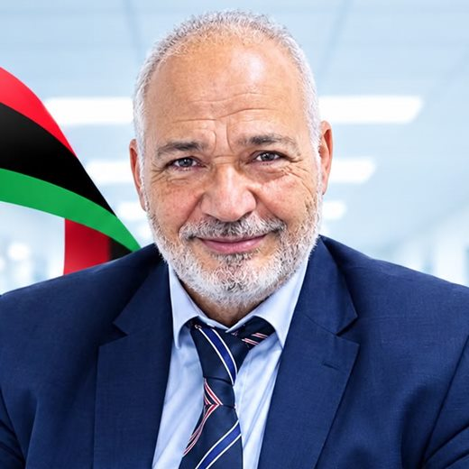
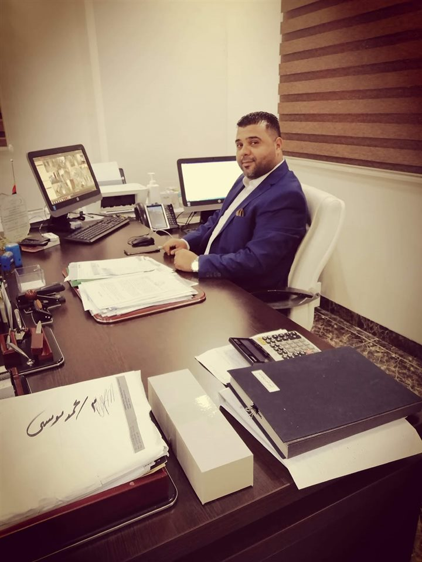
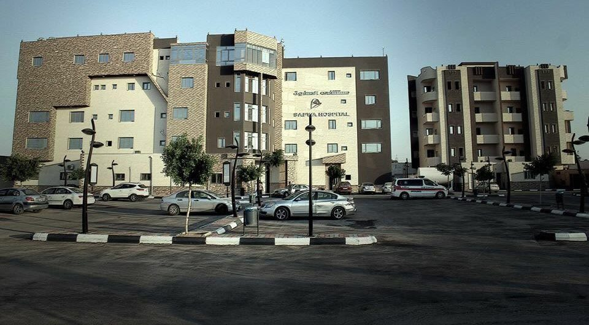
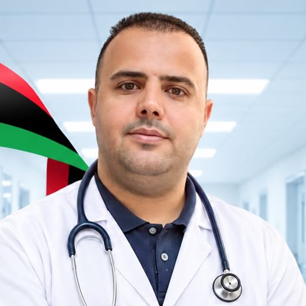

البروفيسور عبدالكريم أبوسبولة
استشاري جراحة القلب والصدر والشرايين والأوعية الدموية
منذ 2017 · طرابلس، ليبيا
شركة ابن سينا الجديدة للخدمات الطبية — نعمل على رفع مستوى النظام الصحي ورعاية الإنسان من الناحيتين الإنسانية والصحية، ومن أبرز مشروعاتنا مصحة الصفوة في طرابلس.
من نحن
تأسست الشركة سنة 2017 في مدينة طرابلس، وتمتلك القدرة على تقديم رعاية صحية متقدمة ومتطورة، تجمع نخبة من الاستشاريين والأطباء المتميزين في مجال الطب البشري، إلى جانب كادر طبي مساعد مؤهَّل.
«شعارنا رفع مستوى النظام الصحي، ورعاية الإنسان من الناحية الإنسانية والصحية.»
رعاية تحترم المريض وأسرته في كل مرحلة من مراحل العلاج.
أطباء متميزون وتخصصات دقيقة تحت سقف واحد.
تجهيزات طبية متطورة وبنية تحتية متكاملة.

من مشروعاتنا
Al Safwa Hospital — مبنى من خمسة طوابق في طرابلس، صُمِّم ليقدّم خدمات طبية متكاملة: عيادات خارجية، وإيواء، وعمليات، وعناية فائقة، وتشخيص.

Photo: Jamal, M. مستشفى الصفوةخدماتنا الطبية
عدد واسع من التخصصات العامة والدقيقة، يقدّمها فريق من الاستشاريين والأطباء والكادر المساعد.
ومن التخصصات الدقيقة: أمراض الغدد الصماءأمراض السكر والقدم السكريعلاج الحساسية والمناعةجراحة المخ والأعصاب والعمود الفقري
فريقنا الطبي
أساتذة واستشاريون في مختلف التخصصات، وعددهم أكبر من أن نذكرهم جميعاً هنا.

استشاري جراحة القلب والصدر والشرايين والأوعية الدموية

استشاري جراحة الأطفال وحديثي الولادة
تستضيف المصحة دورياً نخبة من الأساتذة الاستشاريين من خارج ليبيا. تابعوا صفحتنا لمعرفة مواعيد الزيارات القادمة.
البنية التحتية
من الصفوة
نحن هنا لخدمتكم